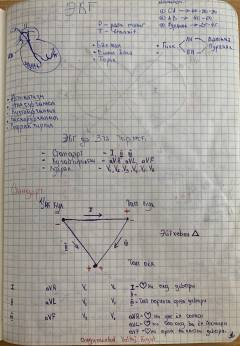

SEEKG asoslari va tahlil qilish usullari bo'yicha amaliy qo'llanma.
Ushbu qo'llanma elektrokardiografiya (EKG) asoslarini o'rganish uchun mo'ljallangan qo'lyozma shaklidagi o'quv materialidir. Unda EKG tarmoqlari, yurak ritmlarini aniqlash va EKG lentasini tahlil qilish bo'yicha asosiy tushunchalar va formulalar keltirilgan.